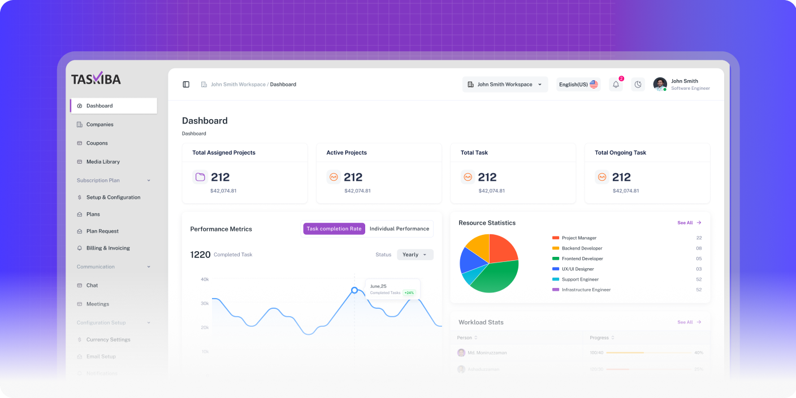
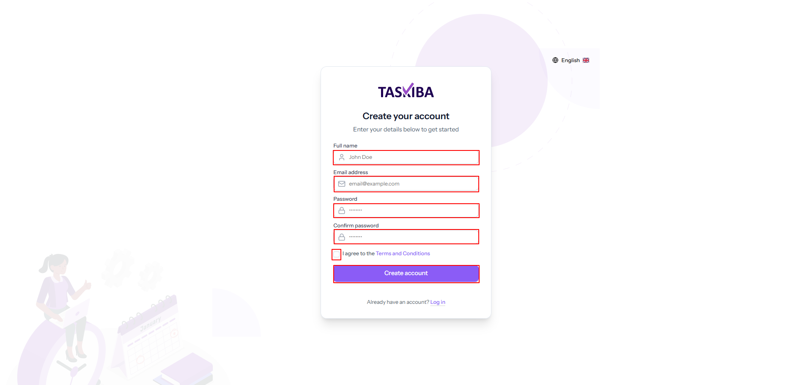

1. Introduction
1.1 What is Taskiba?
Taskiba is a comprehensive project management and collaboration platform designed to help teams stay organized, track progress, and deliver work with greater efficiency. It brings together project planning, task tracking, time management, budget control, bug tracking, and team collaboration into one unified system. The platform addresses common challenges faced by modern teams, such as scattered communication, missed deadlines, budget overruns, and limited visibility into ongoing work. By centralizing all activities into a single source of truth, Taskiba ensures clarity, accountability, and streamlined workflows.
From initial planning to final delivery, the platform supports the entire project lifecycle with tools that scale to meet the needs of both small teams and large organizations. Its intuitive interface allows for quick adoption by new users, while its powerful features provide the flexibility and depth required for complex projects.
Whether it's managing multiple workspaces, monitoring budgets, or collaborating across global teams, Taskiba enables organizations to boost productivity, maintain control, and achieve better outcomes, all within a single, integrated solution.
1.2 Key Features Overview
Taskiba delivers a comprehensive suite of tools designed to enhance productivity and collaboration:
- Multi-Workspace Organization: Create separate workspaces for projects, clients, or departments, each with its own members, projects, and settings, while keeping centralized oversight.
- Project Management: Manage projects with milestone tracking, budgets, team assignments, deadlines, and resources using visual dashboards and automated reports.
- Task Management: Use Kanban boards with custom workflows, priorities, categories, and assignments to track tasks from start to finish with full visibility.
- Time Tracking: Track billable hours with integrated timers, timesheets, and reports to measure productivity and generate accurate billing.
- Bug Tracking: Report, classify, assign, and track bugs from discovery to resolution with workflows that integrate into project timelines.
- Financial Management: Control budgets, track expenses, and create invoices with real-time insights into project profitability.
- Team Collaboration: Set flexible roles and permissions while enabling real-time communication, updates, and seamless teamwork.
- Multi-Language Support: Work in 15+ languages for consistent processes across global teams.
- Mobile Responsive Design: Stay productive anywhere with a responsive design optimized for desktop, tablet, and mobile.
1.3 Who Should Use Taskiba?
Taskiba serves diverse professional needs across multiple industries and organizational structures:
- Project Managers: Coordinate multiple projects, track team performance, milestones, and budgets with full visibility and control for successful delivery.
- Development Teams: Manage lifecycles with bug tracking, sprint planning, feature requests, and clear communication to reduce technical debt.
- Creative Agencies: Handle client projects with time tracking, billing, timeline management, and communication tools for efficiency and profitability.
- Consulting Firms: Manage client engagements with time tracking, expense control, and reports from scoping to final deliverables.
- Freelancers and Independent Contractors: Organize project portfolios with tools for time tracking, communication, and documentation scaled for solo work.
- Small to Medium Businesses: Run cross-department projects, allocate resources, and gain visibility with simplified professional management tools.
- Remote and Distributed Teams: Stay cohesive across locations with real-time collaboration and communication features built for distributed work.
The platform's scalability ensures that organizations can start with basic project management needs and expand functionality as their requirements grow, making it suitable for teams ranging from individual freelancers to mid-sized organizations with complex project portfolios.
2. Registration and Login
Taskiba includes a comprehensive user authentication system that handles account registration, login, password recovery, and email verification. The platform ensures secure access using role-based permissions and provides features to protect user accounts and manage sessions safely.
2.1 User Registration
To begin using Taskiba, users must create an account through a secure registration process that verifies identity and protects data.
1. Visit the Registration Page: Go to the official Taskiba URL: https://taskiba.com. On the homepage, click "Sign Up" or "Get Started" to open the registration form, designed with clear steps, security, and real-time validation.
2. Fill Registration Form: Provide accurate details in all required fields:
- Full Name: Enter your complete name, visible to team members on assignments, records, and notifications.
- Email Address: Use an active, valid email for login, system updates, and security alerts. The system checks format and prevents duplicates.
- Password: Create a secure password (min. 8 characters with uppercase, lowercase, numbers, and symbols). Real-time strength feedback is provided.
- Confirm Password: Re-enter your password exactly to ensure both match before submission.
3. Submit Registration: Review the terms of service and privacy policy to understand user rights and data handling. Check the agreement box, then click "Create Account" to complete registration.
2.2 Email Verification
Email verification confirms account ownership, activates access, and prevents unauthorized registrations while ensuring reliable communication.
1. Check Your Email: After registration, check your inbox for a Taskiba email titled "Verify Your Account." If it's not there, check spam, junk, or promotions folders, as email providers may filter automated messages differently.
2. Verify Your Account: Open the email and click the secure, time-limited link to confirm your address and activate your account. The confirmation page shows a success message. Expired links redirect you to request a new verification email.
3. Resend Verification (if needed): If no email arrives, go to the login page, select "Resend Verification Email," enter your registered email, and wait for the new message. The system tracks attempts to prevent abuse but ensures legitimate activation.
2.3 User Login
Once email verification is complete, log in securely to Taskiba with protections against unauthorized access.
1. Access the Login Page: Use the login URL from your welcome email or the main website via "Sign In/Login." The interface provides clear fields and security guidance.

2. Enter Login Credentials:
- Email Address: Enter the exact registered email (case-sensitive).
- Password: Input carefully; multiple failed attempts trigger security measures.
- Remember Me: Optional-stores secure tokens to keep you logged in on trusted devices.
3. Complete Login: Click "Sign In" to authenticate. Upon success, you're redirected to your dashboard or the last accessed page.
4. Dashboard Overview: The dashboard is your control hub with key stats and navigation:
- Main Statistics Cards: Total Users, Active Projects, Expense Approvals, Timesheet Approvals.
- Navigation Features: Left Sidebar - Projects, Tasks, Timesheets, Budgets, Reports, Settings; Workspace Switcher; Localization Toggle; Profile Menu.
2.4 Password Management
Taskiba provides a secure password management tool with both recovery and proactive update features.
2.4.1 Forgot Password
If you forget your password, follow the secure recovery process:
- Access Password Reset: On the login page, click "Forgot Password?" to reach the recovery page. Enter your registered email and click "Send Reset Link." If valid, the system emails a secure reset link.
- Reset Your Password: Open the email, click the time-limited link, and access the reset form. Enter your new password twice, following security rules, and click "Reset Password." The system checks strength and matches before granting access.
2.4.2 Change Password (When Logged In)
Logged-in users can update passwords anytime for better security.
- Access Profile Settings: From your account dropdown (top-right), go to Profile/Account Settings.
- Update Password: In the Security tab, enter your current password for verification, then input a new one twice. The system checks strength and match before saving. Click "Update Password."
All password changes are logged, and confirmation emails are sent to ensure account safety.
3. Workspace Management
Workspace Management in Taskiba provides the fundamental organizational structure that enables teams to compartmentalize their work effectively. This system allows users to create separate environments for different clients, projects, departments, or business functions while maintaining centralized access and oversight.
3.1 Understanding Workspaces
- Workspaces are the core organizational unit in Taskiba, acting as independent environments with their own projects, teams, settings, and permissions. They solve the challenge of managing multiple streams by keeping them separate while allowing seamless switching between contexts.
3.1.1 Workspace Applications and Use Cases:
- Client Project Separation: Create distinct workspaces for each client, keeping projects, timelines, and communications isolated with dedicated access controls.
- Departmental Organization: Build department-specific workspaces (Marketing, Sales, Development, etc.) to manage workflows, reporting, and teams while retaining organizational visibility.
- Multiple Business Ventures: Manage separate ventures or business lines with unique financial tracking, teams, and processes under dedicated workspaces.
- Personal and Professional Separation: Keep personal projects and professional work apart for better work-life balance and clear task separation.
Each workspace functions as a complete ecosystem with its own projects, tasks, time tracking, expenses, and communication channels. Activities remain isolated while authorized users can access multiple workspaces when needed.
3.2 Creating a New Workspace
3.2.1 Access Workspace Creation
Go to the Workspaces section from the main sidebar to view all accessible workspaces and your role in each. Click Create Workspace, prominently displayed for quick setup.
3.2.2 Fill Workspace Details
- Workspace Name: Enter a clear, descriptive name that distinguishes the workspace. The name is the primary identifier shown in menus, notifications, and reports, so choose one that stays relevant.
- Description: Optionally add details about purpose, goals, stakeholders, or workflows. This helps team members understand context, roles, and expectations.
3.2.3 Create Workspace
After completing details and passing limit checks, click Create Workspace. The system sets up the workspace instantly and redirects you to it. You become the workspace owner with full admin privileges.
Important Note: If the workspace limit is reached, creation is blocked, and upgrade options are displayed to expand capacity.
3.3 Managing Workspace Members
Effective workspace member management is essential for security, proper access, and smooth collaboration. Taskiba provides tools to invite members, manage roles, and control permissions.
3.3.1 Inviting Team Members
Owners and managers can add new members while keeping control.
1. Send Invitations
Go to Workspace Settings → Members. Click Invite Members, enter emails (single, comma-separated, or line-by-line), choose a default role, and click Send Invitations. Each user gets a secure, time-limited link via email.
2. Invitation Management
- Pending Invitations: Track status, send date, and recipient details.
- Resend Invitations: Send reminders or replacements if needed.
- Cancel Invitations: Revoke unused links to prevent unauthorized access.
3.3.2 Member Roles and Permissions
Taskiba uses a role-based system for balanced access:
- Owner: Full control (settings, billing, member management, deletion). Automatically assigned to creator.
- Manager: Create/manage projects, assign tasks, oversee teams, and access reports.
- Member: Work on assigned tasks, track time, submit expenses, and collaborate.
- Client: Limited access to view project progress, reports, and deliverables.
3.3.3 Managing Existing Members
Adjust access as teams evolve:
- Change Roles: Update permissions instantly to match responsibilities.
- Remove Members: Revoke access while keeping contribution history.
- Suspend Members: Temporarily block access without full removal.
- Transfer Ownership: Assign ownership (and full privileges) to another qualified member.
3.4 Workspace Settings
Workspace settings provide comprehensive configuration options that determine how the workspace operates, appears to members, and integrates with broader organizational processes.
3.4.1 Workspace Information
The workspace information section lets you manage basic workspace details:
- Name Configuration: Update the workspace name to match project scope, organization, or branding. Each name must be unique (max 50 characters, only hyphens/underscores allowed) to avoid confusion and ensure integration compatibility. Changes update instantly across menus, notifications, reports, and interfaces.
- Description Management: Add or edit workspace descriptions (up to 500 characters) to explain purpose, goals, and expectations. Markdown formatting is supported for emphasis, lists, and links. Descriptions appear on dashboards, selection menus, and invitation emails, helping members quickly understand workspace objectives.
4. Project Management
Project Management in Taskiba provides comprehensive tools for planning, executing, and monitoring projects from inception through completion. This module serves as the central hub for organizing work activities, coordinating team efforts, and ensuring successful project delivery within defined parameters of time, budget, and quality.
4.1 Creating Projects
The project creation process sets the foundation for organizing work, defining objectives, and coordinating teams within your workspace.
4.1.1 Access Project Creation
Go to the "Projects" section in the main menu to view all existing projects, their status, and key metrics. Click "Create Project" to start. The interface allows new project setup while keeping your current portfolio visible.
4.1.2 Basic Project Information
- Project Title: Enter a clear, descriptive name that communicates purpose and remains meaningful across dashboards, reports, notifications, and task assignments.
- Project Description: (Optional) Add details on objectives, scope, deliverables, background, success criteria, and constraints. Helps members understand roles and responsibilities. Markdown formatting supported.
Project Status: Choose from predefined options:
- Planning: defining requirements/resources
- Active: execution in progress
- On Hold: temporarily suspended
- Completed: deliverables achieved
- Cancelled: discontinued
Priority Level: Define importance for resource allocation:
- Low: routine projects
- Medium: standard urgency
- High: important, needs focused attention
- Urgent: critical, immediate priority
4.1.3 Project Timeline & Resource Planning
- Start Date: (Optional) Define when project begins-future or already started.
- Project Deadline: (Optional) Set target completion date for tracking and notifications.
- Estimated Hours: Provide total effort estimate; system tracks actual vs. planned.
- Budget Allocation: (Optional) Define financial resources in workspace currency for cost tracking, expense control, and reporting.
- Project Visibility: Choose Public (all workspace members see it) or Private (only assigned members).
4.1.4 Create and Initialize Project
Review details and click "Create Project." The project becomes available for team assignments, tasks, and planning. It appears in dashboards and menus immediately, with the creator receiving management permissions. Additional details and settings can be updated anytime as requirements evolve.
4.2 Managing Project Team
Project team management ensures the right personnel and clients have controlled access to resources while maintaining security through role assignments and permissions.
4.2.1 Adding Team Members
1. Assign Members: Open the project, go to the Team section, and click Add/Assign Members. Choose from the workspace list, which shows roles, current assignments, and availability to support informed decisions.
2. Assign Clients: Add external stakeholders via Add Clients/Member/Manager. Clients receive restricted access to view progress, updates, and deliverables while preserving project security.
4.2.2 Removing Team Members
- Remove Members: Use the remove button to revoke access. Their past contributions remain recorded.
- Remove Clients: Similarly, remove clients to maintain security while keeping communication history.
- Authorization: Only workspace owners and managers can remove members to ensure controlled oversight.
4.2.3 Project Access Control
- Owner Access: Full privileges across all projects, including team, budget, and configuration.
- Manager Access: Manage assigned projects, team members, and configurations.
- Member Access: Access only assigned projects/tasks; can track time, update progress, and communicate.
- Client Access: Limited project visibility for updates, communications, and deliverables relevant to their involvement.
4.3 Project Features
Taskiba provides tools for project planning, execution tracking, and resource management across the lifecycle.
4.3.1 Project Milestones
- Create Milestones: Define key deliverables marking major phases or checkpoints for progress and stakeholder updates.
- Track Progress: Use visual indicators and reports to monitor milestone completion and spot delays early.
- Set Due Dates: Assign timelines that integrate with notifications to keep teams aware of deadlines.
- Progress Calculation: Project progress auto-calculates from milestone percentages for accurate tracking.
4.3.2 Project Notes
- Add Notes: Record requirements, specs, and decisions as a central project knowledge base.
- Meeting Notes: Capture meetings, decisions, and actions for accountability and continuity.
- Requirements Documentation: Store criteria and specifications to guide delivery and quality.
- Search Functionality: Find notes quickly using search across content, tags, and metadata.
4.3.3 File Attachments
- Upload Files: Attach documents, resources, and deliverables in multiple formats with secure storage.
- File Organization: Manage with filters, search, and categorization for quick access.
- Version Control: Track updates and revisions to preserve history and prevent conflicts.
- Access Control: Restrict sensitive files to authorized members, aligned with team permissions.
4.4 Project Budget
Taskiba supports financial planning, expense tracking, and cost control with real-time visibility into budget use and performance.
4.4.1 Creating Project Budget
1. Access Budget Creation: Open your project → Budget section → "Create Budget" to set financial parameters.
2. Budget Setup:
- Total Budget: Define overall allocation in workspace currency as the spending limit baseline.
- Period Type: Choose project-wide, monthly, or quarterly tracking for accurate reporting.
- Budget Period Dates: Set start and end dates aligned with project timelines or fiscal cycles.
- Budget Description: Add notes on assumptions, constraints, or considerations for financial context.
3. Budget Categories:
- Add Categories: Create types like labor, materials, travel, or software for detailed tracking.
- Allocate Amounts: Assign specific values per category to guide spending and variance checks.
- Category Colors: Apply colors for clear visualization in reports and charts.
- Category Descriptions: Explain coverage to ensure accurate expense classification and reporting.
4.4.2 Budget Monitoring
- Real-time Tracking: Dashboards and reports show allocated vs. spent amounts across categories.
- Utilization Percentage: Visual indicators display budget consumption percentages for quick insights.
- Expense Integration: Recorded expenses auto-update budgets, eliminating manual entry and discrepancies.
4.5 Project Activities & Tracking
Comprehensive activity tracking and progress monitoring ensure complete visibility into project execution, team performance, and operational efficiency with automated logging and reporting.
4.5.1 Activity Log
- Automatic Tracking: System auto-logs all activities (assignments, status changes, milestones, etc.) without manual effort, reducing admin load.
- Activity Types: Records assignments/removals, status updates, milestones, budget changes, and other key events.
- Search Activities: Quickly find activities by description, member, date, or type.
- Activity History: Maintains audit trails for accountability, compliance, post-mortems, and performance analysis.
4.5.2 Progress Tracking
- Manual Progress: Set completion % manually via judgment, team review, or client input.
- Auto-calculation: Calculates progress using milestones and tasks for objective measurement.
- Recalculate Progress: Updates progress as project conditions evolve.
- Visual Indicators: Uses bars, status displays, and graphics for instant visibility.
4.5.3 Project Integration
- Tasks Integration: Links tasks to projects for detailed tracking and progress monitoring.
- Time Tracking: Connects timesheets for accurate time, productivity, and billing analysis.
- Expenses Integration: Syncs project expenses with budget tracking, removing manual entry.
- Invoice Generation: Creates invoices from project work, time, and expenses for accurate billing.
5. Task Management
Task Management in Taskiba provides the granular work organization capabilities that transform project objectives into actionable work items. This comprehensive system enables teams to break down complex projects into manageable tasks, track individual work progress, and maintain visibility into team productivity across all project activities.
5.1 Understanding Tasks
Tasks are the core work units in Taskiba, enabling organization, progress tracking, and team coordination. Each task acts as a discrete item that supports project objectives while ensuring clarity and visibility.
5.1.1 Task Views
- Kanban Board: Drag-and-drop interface that moves tasks across workflow stages, showing workload balance, bottlenecks, and real-time progress.
- Grid View: Displays task cards with priority, assignee, due date, and progress-ideal for leaders monitoring multiple tasks at once.
- List View: Table format with sortable columns, filters, and pagination for large volumes; supports bulk operations and detailed reporting.
5.1.2 Task Stages
- Workspace-Specific Customization: Stages set per workspace, ensuring consistent workflows while allowing unique methods across workspaces.
- Default Stage Configuration: Includes To Do, In Progress, Review, and Done stages, covering common workflows with customization options.
- Visual Stage Management: Drag-and-drop movement in Kanban, with color-coded stages for quick recognition and workflow assessment.
- Stage Progression Logic: Stage shifts reflect real progress, triggering notifications, updates, and integrations with features like time tracking and project calculations.
5.2 Creating Tasks
Task creation defines work items that support project completion with clear assignments, timelines, and tracking.
1. Access Task Creation: Go to Tasks in the main menu to view all tasks, then click Create Task. Tasks can also be created directly within projects for instant association.
2. Task Information Configuration:
- Task Title: Add a clear, descriptive name as the main identifier.
- Task Description: Enter detailed requirements, specifications, and context to guide execution.
- Project Association: Select the project to ensure visibility, permissions, and reporting.
- Milestone Linking: Optionally connect tasks to milestones for progress calculations.
- Priority Assignment: Choose Low, Medium, High, or Critical to define urgency.
3. Task Scheduling and Assignment:
- Start Date: Define when the task begins for planning and coordination.
- End Date: Set deadlines to manage timelines and notifications.
- Assignment Designation: Assign tasks to team members for accountability and workload visibility.
4. Task Creation Completion: Review details, click Create Task, and the task is added at the first workflow stage with 0% progress, ready for execution and tracking.
5.3 Managing Tasks
Task management ensures oversight, collaboration, and coordination throughout the task lifecycle.
5.3.1 Task Actions
- View Task: See full details, description, progress, comments, files, and history, for informed decisions.
- Edit Task: Update descriptions, deadlines, assignments, or priority as project needs evolve.
- Duplicate Task: Copy existing tasks to speed up recurring work with consistency.
- Delete Task: Remove irrelevant tasks; restricted to owners/managers for data integrity.
- Change Stage: Move tasks across workflow stages via drag-and-drop or direct selection.
5.3.2 Task Details
- Comments System: Task-specific threads keep communication clear, contextual, and traceable.
- Checklist Management: Break tasks into smaller steps for detailed tracking.
- File Attachments: Add documents, images, or resources for centralized access.
- Progress Tracking: Use completion % to measure advancement and project contribution.
- Activity Log: Track all updates, changes, and interactions for accountability and analysis.
5.3.3 Task Collaboration
- Comment Integration: Centralized discussions ensure all communication stays task-related.
- File Management: Upload and organize resources directly within tasks.
- Checklist Collaboration: Share and manage checklists for distributed yet coordinated execution.
5.4 Task Views and Filtering
Viewing and filtering tools support effective task management across projects and workflows.
5.4.1 View Options
- Kanban Board: Drag-and-drop workflow with real-time updates, stage/priority color-coding, and instant bottleneck visibility.
- Card View: Grid of task cards showing progress, priority, and assignee for quick workload assessment.
- Table View: Structured list with sortable columns and pagination for large task volumes, detailed analysis, and reporting.
5.4.2 Filtering Tasks
- Search Functionality: Find tasks by titles, descriptions, or metadata.
- Project Filtering: View tasks from a single project for focused management.
- Stage Filtering: Show tasks by workflow stage to optimize flow and balance workloads.
- Priority Filtering: Highlight tasks by urgency to allocate resources effectively.
- Assignee Filtering: Display tasks by team members for workload and performance tracking.
- Filter Reset: Clear filters to restore the complete task list view.
5.5 Task Progress and Integration
Progress tracking and integrations connect tasks seamlessly with project and organizational systems.
5.5.1 Progress Tracking
- Manual Progress: Update completion manually based on judgment or feedback.
- Checklist Progress: Auto-calculate progress from completed checklist items.
- Visual Indicators: Show progress with bars, percentages, and graphics.
- Milestone Integration: Link task progress to project milestones for accurate reporting.
5.5.2 Task Integration
- Project Connection: Link tasks to projects for aggregation, reporting, and management.
- Milestone Linking: Associate tasks with milestones for deliverable progress tracking.
- Time Tracking: Track task time for productivity, billing, and resource allocation.
5.5.3 Access Control
- Owner Access: Full workspace-wide control and oversight.
- Manager Access: Manage tasks in assigned projects with oversight balance.
- Member Access: Work on assigned tasks with project-level visibility.
- Client Access: Limited view of assigned project tasks for secure stakeholder involvement.
6. Bug Tracking
Bug Tracking provides a structured system to capture, triage, and resolve defects with clear visibility and collaboration.
6.1 Understanding Bug Management
6.1.1 Bug Views
- Kanban, Grid, and List views with priority/severity/assignee/status visible for quick triage.
6.1.2 Bug Statuses
- Workspace-configured statuses (common flow: Open → In Progress → Testing → Resolved → Closed) with drag-and-drop and notifications.
6.2 Reporting Bugs
1. Access: Go to Bugs → Report Bug (or create inside a project).
2. Information:
- Title, description, project, optional milestone.
- Priority: Low/Medium/High/Critical; Severity: Minor/Major/Critical/Blocker.
3. Documentation:
- Steps to reproduce, expected vs. actual behavior, environment (OS/browser/device), optional assignee.
4. Submit: Click Report Bug to enter the first workflow stage for triage.
6.3 Managing Bugs
6.3.1 Bug Actions
- Edit details (description, priority, severity, assignment).
- Delete duplicates/invalids (owner/manager only).
- Change status via drag-and-drop or selection.
6.3.2 Bug Details
- Comments, file attachments (screenshots/logs), full activity log.
6.3.3 Bug Collaboration
- Threaded comments, shared evidence, and status updates for transparent debugging.
6.4 Bug Views and Filtering
6.4.1 View Options
Kanban (visual workflow), Grid (cards), and List (table) for different triage styles.
6.4.2 Filtering Bugs
- Search; filter by project, status, priority, severity, assignee; reset to show all.
6.5 Bug Resolution and Integration
6.5.1 Resolution Process
- Move through investigation → fix → verification with clear status tracking.
- Assign to the right owner to optimize resolution.
6.5.2 Bug Integration
- Link to projects and milestones; log all changes for audits; collaborate via comments/files.
6.5.3 Access Control
- Owner: full visibility/control; Manager: manage bugs in assigned projects; Member: work on assigned bugs; Client: limited view for awareness.
7. Time Tracking
Time Tracking in Taskiba provides comprehensive capabilities for monitoring, recording, and analyzing time investment across projects and tasks. This essential module enables accurate productivity measurement, precise client billing, effective resource management, and detailed performance analysis that supports both operational efficiency and financial accountability.
7.1 Understanding Time Tracking
- Time tracking in Taskiba extends beyond recording hours, supporting productivity management and financial control.
- It monitors time across projects and tasks to align resources with requirements and client expectations, while giving real-time visibility into work distribution.
- Verified time records enable accurate client billing, transparent invoicing, and reliable revenue recognition.
- The system provides insights into team and individual performance, helping managers analyze work patterns, improve efficiency, and optimize resources.
- Detailed reports for clients, managers, and teams support project oversight, financial analysis, and strategic planning.
- Integrated with budgets, it tracks time within set limits and provides early warnings of potential overruns.
7.2 Using the Built-in Timer
The built-in timer captures work time in real time with minimal effort or disruption.
7.2.1 Starting a Timer
- Access the timer via the top navigation icon, always available across the platform.
- Select the project and task from dropdown menus based on your permissions to ensure accurate time attribution.
- Click Start Timer to begin tracking instantly; it records continuously until paused or stopped.
7.2.2 Timer Controls
- Pause/Resume: Interrupt tracking for breaks or meetings, then continue from the same point to record only actual work time.
- Stop Timer: End the session, save it to your timesheet, and integrate it with reporting and billing systems.
- Add Description: Note activities or accomplishments during the session for project tracking and billing transparency.
- Edit Time: Adjust recorded hours to fix errors or missed actions, while maintaining audit trails.
- Delete Session: Remove incorrect or accidental entries; restricted to authorized users to protect data accuracy.
7.3 Manual Time Entry
Manual time entry allows flexibility for direct logging or adding historical data not captured by the timer.
7.3.1 Creating Time Entries
- Add Time Entry: Go to Timesheets → "Add Entry" to record time manually. Set date, project, task, and specify duration (via start-end times or total hours). Add descriptions for context and tracking.
- Copy Entries: Duplicate time from previous days/weeks to handle recurring patterns efficiently.
- Recurring Entries: Automate regular tasks (meetings, admin, ongoing work) to ensure consistent tracking with less manual effort.
7.3.2 Time Entry Details
- Date & Duration: Record when work was done and for how long; integrates with scheduling and budget tracking.
- Project/Task Association: Link entries to projects/tasks for aggregation, visibility, and detailed analysis.
- Billable Status: Mark time as billable or non-billable for invoicing, financial tracking, and accurate billing.
- Work Description: Add notes to explain activities for project documentation, client updates, and team coordination.
7.4 Timesheet Management
Organized timesheet tools provide accurate record oversight, approval workflows, and administrative control for efficient operations.
7.4.1 Timesheet Views
- Daily View: Shows all entries for a day, enabling detailed analysis, quick edits, and immediate error correction. Supports end-of-day review and accurate record maintenance.
- Weekly View: Displays seven days of data for trend identification, weekly totals, and planning. Helps analyze productivity patterns and allocate resources effectively.
- Monthly View: Provides full-month tracking for long-term trend analysis, budget vs. actual comparisons, invoicing, and performance evaluation. Integrates with financial systems.
- Calendar View: Visual calendar format for intuitive scheduling, drag-and-drop modifications, and clear time pattern analysis. Supports coordination and easy management.
7.4.2 Timesheet Approval Process
- Submit for Approval: Users review and finalize timesheets before submitting for managerial/client approval, ensuring accuracy and completeness.
Approval Workflow:
- Pending: Awaiting manager review.
- Approved: Ready for billing, payroll, and financial integration.
- Rejected: Returned with feedback for corrections and resubmission.
- Manager Actions: Managers review detailed entries, approve or reject with comments, request clarifications, and bulk-approve multiple timesheets to save time while maintaining oversight.
7.5 Time Tracking Reports
Reporting tools turn time tracking data into insights for project management, financial analysis, and planning.
7.5.1 Standard Reports
- Time Summary Report: Aggregates hours by project, task, or team member with billable vs. non-billable breakdowns. Provides work distribution analysis to support planning, resource optimization, and billing accuracy.
- Productivity Report: Shows daily, weekly, and monthly trends with comparative team analysis. Provides efficiency metrics to evaluate performance, identify improvements, and highlight best practices.
- Project Time Report: Tracks time for specific projects with budget vs. actual comparisons. Includes milestone tracking for project health assessment, financial control, and client communication.
7.5.2 Custom Reports
- Date Range Selection: Generate reports for specific time periods aligned with reporting cycles, project phases, or analysis needs.
- Filter Options: Filter by project, team member, task type, billable status, and more for focused reporting.
- Scheduled Reports: Automate generation and email delivery to keep stakeholders updated regularly with no manual effort.
8. Budget & Expense Management
Budget & Expense Management in Taskiba provides comprehensive financial control and oversight capabilities that enable organizations to establish project budgets, track expenses, monitor financial performance, and maintain cost control throughout project execution. This integrated system ensures that financial resources are allocated effectively while providing real-time visibility into project profitability and budget adherence.
8.1 Creating Project Budgets
Project budgets define financial limits for execution, expense tracking, and performance measurement.
8.1.1 Access Budget Creation:
- Go to Budgets in the main menu to view all budgets with status and utilization details.
- Click Create Budget to start a new one or create directly from a project for immediate association.
- The interface gives access to planning tools while showing existing budget portfolios.
8.1.2 Budget Setup Configuration
- Project Association: Select a project to link the budget. Each project can have only one active budget for clarity and integration with management tools.
- Total Budget Amount: Enter the approved spending limit in the workspace currency for expense tracking, variance analysis, and control.
- Budget Period Type: Choose timeframe, Project-based, Monthly, Quarterly, or Yearly, to match project or financial cycles.
- Budget Period Dates: Set a start date for monitoring; end dates are optional but recommended for bounded analysis.
- Budget Description: Add optional notes on assumptions, constraints, or approvals to support transparency and communication.
8.1.3 Budget Categories Management
- Add Categories: Create at least one category for expense classification and detailed tracking.
- Category Configuration: Name categories clearly and allocate amounts for better variance monitoring.
- Visual Identification: Use colors to distinguish categories in charts and reports.
- Category Documentation: Add descriptions for each category to prevent misallocation and ensure accurate reporting.
8.1.4 Budget Creation Completion
- Review details, then click Create Budget to activate.
- Budgets integrate immediately with expense tracking and monitoring, with a one-budget-per-project rule for clarity.
8.2 Managing Expenses
Systematic expense management enables accurate recording, categorization, approvals, and budget tracking throughout projects.
8.2.1. Access Expense Creation:
Go to the "Expenses" section to view all records with statuses. Click "Add Expense" to record a new expense.
8.2.2 Expense Information Configuration:
- Project Association: Select the project for context, visibility, workflows, and budget tracking. Required.
- Budget Category Selection: Assign to a category for accurate tracking and variance analysis. Optional but recommended.
- Task Linking: Optionally link to a task for detailed project cost analysis.
- Expense Amount: Enter the exact cost in the project's currency. Required.
- Expense Date: Record the actual date incurred for accurate timelines. Required.
- Expense Title: Add a clear, descriptive title for identification and audits. Required.
- Expense Description: Optional details such as vendor, purpose, or justification for approval support.
8.2.3 Expense Submission Process
Review details, then click "Submit Expense". The expense is marked Pending until approved, while integrating with budget tracking.
8.2.4 Expense Actions
- View Expense: Check full details, approval status, and history.
- Edit Expense: Update details for pending expenses before approval.
- Duplicate Expense: Copy existing expenses for faster recurring entry.
- Delete Expense: Remove pending-only expenses recorded in error.
8.3 Budget Monitoring
Comprehensive budget monitoring ensures real-time visibility into financial health, spending, and control throughout project execution.
8.3.1 Budget Overview
- Total Budget: Shows full budget allocation as baseline for tracking and analysis.
- Total Spent: Displays cumulative expenses for real-time budget utilization.
- Remaining Budget: Calculates available funds for future planning.
- Utilization Percentage: Shows percentage of budget consumed for quick assessment.
- Budget Status: Indicates project state as Active, Completed, or Cancelled.
8.3.2 Category Tracking
- Allocated Amount: Displays budget assigned to each category for expense planning.
- Total Spent: Shows cumulative category expenses for detailed analysis.
- Remaining Amount: Calculates unused funds within each category.
- Utilization Percentage: Shows category budget usage in percentage.
- Over-Budget Warning: Alerts when category spending exceeds allocation.
8.3.3 Real-time Updates
- Automatic Calculation: Syncs expenses instantly for accurate budget tracking.
- Visual Indicators: Uses charts and bars for quick financial visibility.
- Color Coding: Assigns colors for easy category identification and analysis.
8.4 Expense Management
Provides structured expense processing, approvals, and analysis for financial control.
8.4.1 Expense Status Workflow
- Pending Status: Newly submitted, awaiting manager review.
- Approved Status: Authorized, reimbursable, and added to budget tracking.
- Rejected Status: Declined with feedback for correction.
- Requires Information Status: Awaiting additional details before approval.
8.4.2 Filtering and Search
- Project Filtering: View expenses for selected projects only.
- Category Filtering: Show expenses under chosen budget categories.
- Status Filtering: Focus on expenses by approval stage.
- Submitter Filtering: Track expenses by specific team members.
- Search Functionality: Find expenses by title, vendor, or details.
- Date Range Selection: Filter by specific time periods.
8.4.3 Expense Views
- List View: Detailed table with sortable expense data.
- Project View: Organize expenses by project association.
- Category View: Group and analyze by budget category.
8.5 Access Control and Integration
Manages access rights and integrations to ensure secure, connected financial oversight.
8.5.1 Budget Access Control
- Owner Access: Full access to all budgets and expenses for complete oversight.
- Manager Access: Create budgets and manage expenses within assigned projects.
- Member Access: Submit expenses only for assigned projects, ensuring security.
- Client Access: View budgets and expenses of their projects with limited transparency.
8.5.2 Budget Integration
- Project Connection: Link budgets to projects for full project-level financial analysis.
- Expense Tracking: Auto-integrate expenses with budgets for real-time utilization.
- Category Management: Organize by categories for detailed analysis and variance tracking.
- Real-time Updates: Instantly update budgets as expenses are recorded and approved.
9. Invoice Management
Invoice Management in Taskiba provides comprehensive billing and financial collection capabilities that enable organizations to generate professional invoices, process payments, and maintain accurate financial records throughout the client engagement lifecycle. This integrated system transforms project work into billable invoices while supporting diverse payment methods and maintaining complete financial oversight.
9.1 Creating Invoices
Establish professional billing documents that reflect project work, include payment instructions, and maintain full transaction records.
9.1.1 Access Invoice Creation
Go to Invoices in the main menu, view existing invoices with statuses, then click Create Invoice to start a new billing document. The interface gives billing tools while showing your active invoices and payments.
9.1.2 Invoice Information Configuration
- Project Association: Select the project to link billing, ensure visibility, client access, and integration with tasks, time, and expenses.
- Client Selection: Assign a client for accurate billing and communication workflows (optional but recommended).
- Invoice Title: Add a clear title for easy tracking and financial management.
- Invoice Description: Add optional details like billing period, phase, or completed work for clarity.
- Invoice Date: Set the invoice creation date for record-keeping and analysis.
- Due Date: Define the payment deadline aligned with terms and cash flow.
9.1.3 Invoice Items Configuration
- Add Items: Create at least one billable line item for invoice completion.
- Item Type: Use "Task" items linked directly to completed project tasks.
- Task Selection: Pick specific tasks for accurate billing and documentation.
- Amount Configuration: Set billing amounts based on effort, pricing, or agreements.
- Item Description: Use auto-filled or custom descriptions for client clarity.
9.1.4 Invoice Calculations and Terms
- Tax Rate Configuration: Apply tax percentages as per client location and regulations.
- Discount Application: Add discounts for agreements, promotions, or relationships.
- Client Notes: Include extra details or instructions for better communication.
- Payment Terms: Define payment conditions, deadlines, fees, or discounts.
9.1.5 Invoice Creation Completion
Review all details, then click Create Invoice to finalize. System generates sequential invoice numbers for records. New invoices are marked as Draft and available for editing, review, or client sharing.
9.2 Managing Invoices
Comprehensive invoice management provides oversight of billing workflows, payment tracking, and client communication throughout the invoice lifecycle.
9.2.1 Invoice Status Workflow
- Draft Status: Newly created invoices stay in draft for review, edits, and approval before client distribution, preventing premature communication.
- Sent Status: Once delivered, invoices move to sent status, enabling payment tracking, overdue monitoring, and client follow-ups.
- Overdue Status: Unpaid invoices past due are marked overdue, triggering reminders and collection workflows while maintaining client focus.
- Paid Status: Processed payments set invoices to paid, closing the cycle, updating records, and confirming revenue recognition.
9.2.2 Invoice Actions
- View Invoice: Access line items, payment history, client records, and financial details for informed decisions and follow-ups.
- Edit Invoice: Update draft invoices for corrections in amounts, terms, descriptions, or client information.
- Send Invoice: Move drafts to sent status and notify clients through email or portal, starting payment workflows.
- Mark as Paid: Manually record payments when auto-processing isn't available, ensuring accurate financial records.
- Delete Invoice: Remove irrelevant draft invoices while maintaining audit trails and preventing disruption of records.
9.2.3 Invoice Details
- Invoice Items: Show detailed line items with descriptions, quantities, rates, and amounts for transparency and approval.
- Financial Calculations: Present subtotal, tax, discount, and total with clear methods to build client trust and reduce disputes.
- Payment Information: Display payment method, references, and transaction details to support reconciliation and audits.
- Client Information: Provide contact details, billing address, and preferences to ensure effective communication and management.
9.3 Payment Processing
Payment processing enables multiple methods with secure handling and automated record updates.
9.3.1 Available Payment Methods
- Stripe Integration: Secure credit card payments with fraud protection, PCI compliance, and instant processing.
- PayPal Integration: Reliable PayPal payments with buyer protection and familiar user experience.
- Multiple Gateway Support: Over 30+ gateways available to meet client preferences and regional needs.
9.3.2 Payment Process
1. Client Payment Processing: Clients receive invoices with clear instructions and secure links. Integrated gateways ensure safe transactions, instant confirmations, and automatic status updates.
2. Manual Payment Recording: Supports checks, transfers, cash, or non-integrated methods. Includes reference numbers, payment method, and dates for full record accuracy.
9.3.3 Payment Tracking
- Payment Status Updates: Real-time updates ensure immediate visibility and accurate financial records.
- Balance Due Calculation: Tracks remaining balances for partial or installment payments, ensuring clarity.
- Overdue Tracking: Automatically flags late payments, triggering collection workflows and reminders.
9.4 Invoice Filtering and Access Control
Filtering and access management streamline invoice handling while maintaining security and control.
9.4.1 Filtering Invoices
- Search Functionality: Find invoices by number, title, client, or project to keep information accessible as volumes grow.
- Status Filtering: View invoices by status to focus on pending, paid, or overdue items for organized processing.
- Project Filtering: Filter by project for billing coordination and profitability analysis.
- Client Filtering: Focus on invoices by client to manage relationships, collections, and financial analysis.
- Date Range Selection: Filter by creation or due dates for time-specific reporting, planning, and cash flow management.
9.4.2 Access Control
- Owner Access: Full visibility and control of all workspace invoices for complete oversight.
- Manager Access: Create and manage invoices for assigned projects, balancing efficiency with oversight.
- Member Access: View sent invoices for assigned projects, ensuring awareness without exposing sensitive data.
- Client Access: Securely view and pay only their invoices, enabling self-service with data protection.
9.4.3 Invoice Integration
- Project Connection: Link invoices to projects for financial tracking and profitability analysis.
- Task Integration: Connect line items to tasks for billing accuracy and work documentation.
- Client Management: Associate invoices with clients for systematic billing and communication.
- Automatic Calculations: Auto-calculate totals, taxes, and discounts to reduce errors and save time.
- Payment Integration: Sync with payment systems for seamless collection and real-time record updates.
10. Team Collaboration
Team Collaboration in Taskiba provides comprehensive communication and coordination capabilities that enable distributed teams to work effectively across projects, maintain clear information sharing, and ensure productive collaboration through structured access controls and integrated communication systems. This essential module supports both internal team coordination and external client engagement within secure, organized collaborative environments.
10.1 Workspace-Based Collaboration
Workspace-based collaboration establishes the fundamental organizational structure that enables structured teamwork with security, efficiency, and clear boundaries.
10.1.1 Workspace Organization
- Multi-Workspace Support: Separate spaces for projects, clients, or departments with independent teams, projects, and communication.
- Role-Based Access Control: Owner, Manager, Member, and Client roles balance collaboration with security.
- Team Invitation System: Invite members by email with role assignment and quick onboarding.
- Workspace Switching: Switch between multiple workspaces without losing context or security.
10.1.2 Project Collaboration
- Project Team Assignment: Assign members or clients to projects based on expertise and needs.
- Project Visibility Management: Public for workspace-wide access or private for confidentiality.
- Client Access Integration: Clients get controlled access to progress, deliverables, and communication.
- Dynamic Team Management: Add or remove members as project needs evolve.
10.2 Communication Features
Comprehensive communication ensures organized collaboration, effective information sharing, and complete documentation.
10.2.1 Task-Level Communication
- Task Comments: Add detailed comments linked to tasks, preserving discussion history, context, and decision-making for relevant team members.
- Bug Comments: Enable technical discussions on bug reports, including diagnostics, solutions, testing, and verification, ensuring thorough resolution and knowledge sharing.
- File Attachments: Share files (documents, images, specifications, screenshots, logs) directly with tasks or bugs, keeping resources accessible and eliminating searching.
- Activity Logging: Automatically track updates, comments, file uploads, and assignments, providing accountability and full visibility into work item progress.
10.2.2 Project Communication
- Project Notes: Document project requirements, meeting records, specifications, and decisions as centralized knowledge for team continuity and execution
- Project Activities: Track project changes like team updates, milestones, budgets, and scope adjustments to maintain transparency and coordination.
- File Sharing: Provide centralized access to specifications, designs, deliverables, and client materials with proper organization and version control.
- Milestone Updates: Share progress, completion, timeline changes, and dependency updates to keep teams and stakeholders aligned.
10.3 Access Control and Permissions
Comprehensive access management ensures secure, efficient collaboration with clear responsibility structures.
10.3.1 Workspace Roles
Defined roles establish authority and collaboration boundaries:
- Owner Access: Full control of all workspace features, team management, projects, clients, finances, and settings. Owners oversee operations, strategy, and accountability.
- Manager Access: Authority to create/manage projects, assign tasks, coordinate resources, and oversee team progress within defined boundaries.
- Member Access: Access to assigned projects, tasks, time tracking, and collaboration tools. Members contribute productively while restricted from administrative/confidential functions.
- Client Access: Controlled visibility into projects, deliverables, and communication. Clients can monitor progress and provide feedback while internal operations remain protected.
10.3.2 Project-Level Access
Granular permissions regulate collaboration within specific projects:
- Project Members: Access to tasks, communication, resources, and progress reporting for assigned projects only.
- Project Clients: Limited visibility into progress, deliverables, and communications with secure boundaries.
- Role-Based Permissions: Permissions align with roles, covering task management, communication, resources, and administration to balance productivity with security.
- Visibility Settings: Configurable options for controlling access to information, communications, client sharing, and admin functions while safeguarding sensitive data.
11 Contact Us Management
Contact Us Management provides comprehensive customer inquiry handling that enables systematic customer communication, response management, and customer service coordination through organized inquiry processing and response tracking.
11.1 Navigation and Access
- Access Requirements: Company login credentials are required to access contact us management functionality through the "Contact Us" section in the main navigation menu.
- Purpose: Manage contact form submissions and customer inquiries while maintaining systematic customer communication and ensuring appropriate response to customer questions and concerns.
11.2 Contact Form Management
- Core Features: Contact form management includes comprehensive inquiry processing capabilities that enable effective customer communication and systematic response management.
- Form Submissions: View all contact form submissions with complete inquiry details, submission timestamps, and customer contact information enabling systematic inquiry processing and response prioritization.
- Message Details: Access complete inquiry messages including customer questions, concerns, and requests providing comprehensive context for appropriate response development and customer service coordination.
- Contact Information: Review sender details and contact information enabling direct customer communication and follow-up coordination for complex inquiries requiring extended interaction.
- Response Management: Reply to customer inquiries directly through the system maintaining communication history and ensuring systematic customer service delivery with appropriate response tracking.
- Status Tracking: Mark messages as read or unread enabling inquiry processing coordination and ensuring that customer inquiries receive appropriate attention and response management.
- Archive System: Archive processed messages maintaining organized inquiry management and enabling historical reference for customer service improvement and communication pattern analysis.
11.3 Contact Settings
- Form Configuration: Customize contact form fields based on organizational requirements and customer information needs enabling appropriate inquiry collection and customer communication optimization.
12 Currency Management
Currency Management provides comprehensive international billing support that enables multi-currency operations while maintaining accurate financial calculations and professional currency presentation across all platform financial activities.
12.1 Navigation and Access
- Access Path: Navigate to "Settings" → "Currency Settings" with Company login credentials to access comprehensive currency management tools and international billing configuration.
- Purpose: Manage supported currencies for international billing while maintaining accurate exchange rates and professional currency presentation that supports global business operations.
12.2 Currency Configuration
- Configuration Process: Access currency settings through the Settings menu and click "Add Currency" button to create new currency support with detailed configuration options.
Required Currency Details:
- Name: Enter full currency name for clear identification in billing and financial displays.
- Code: Specify standard code (USD, EUR, GBP) as per international standards for system integration.
- Symbol: Configure symbol ($, €, £) for correct financial display and cultural accuracy.
- Exchange Rate: Set conversion rate against base currency for accurate multi-currency billing.
- Status: Mark Active or Inactive to control currency availability in billing.
12.3 Currency Features
- Multi-Currency Support: Enable support for multiple currencies accommodating international customer base and global business operations while maintaining accurate financial calculations and professional presentation.
- Default Currency: Establish system default currency for baseline financial operations while supporting multi-currency transactions and billing flexibility for international customers.
- Billing Integration: Integrate currencies with billing and invoicing systems ensuring accurate financial calculations and professional currency presentation in all financial communications and transactions.
13 Landing Page Management
Landing Page Management provides comprehensive public website customization that enables marketing effectiveness, customer acquisition, and professional brand presentation through systematic content management and search engine optimization.
13.1 Navigation and Access
- Access Requirements: Company login credentials are required to access landing page management through the "Landing Page" section in the main navigation menu.
- Purpose: Customize and manage the public landing page while optimizing marketing effectiveness and ensuring professional brand presentation that supports customer acquisition and business growth.
13.2 Landing Page Sections
Available Sections: Comprehensive landing page components enable complete website customization and marketing optimization:
- Hero Section: Configure main banner with compelling call-to-action elements that capture visitor attention and drive conversion through professional presentation and clear value proposition communication.
- Features Section: Highlight key platform features and capabilities providing visitors with clear understanding of platform value and competitive advantages through organized feature presentation.
- About Us: Present company information, history, and organizational values building customer trust and professional credibility through comprehensive organizational presentation.
- Screenshots: Display product screenshots gallery showcasing platform capabilities and user interface design helping visitors understand platform functionality and user experience.
- Testimonials: Feature customer testimonials and success stories building credibility and social proof that supports customer confidence and conversion optimization.
- FAQ Section: Address frequently asked questions providing comprehensive information that reduces customer acquisition barriers and supports informed decision-making.
- Contact Section: Present contact information and inquiry form enabling customer communication and lead generation through accessible contact options.
- Newsletter: Provide newsletter subscription capabilities enabling ongoing customer communication and marketing relationship development through systematic email marketing.
13.3 Landing Page Management
- Content Control: Enable or disable page sections providing flexible website presentation and campaign-specific customization while maintaining professional appearance and marketing effectiveness.
- Content Management: Edit section content through comprehensive content management tools enabling regular updates and marketing campaign alignment without technical expertise requirements.
- Image Management: Upload and manage images with automatic optimization and responsive presentation ensuring professional appearance across all devices and connection speeds.
- SEO Settings: Configure meta tags and descriptions optimizing search engine visibility and improving organic traffic through systematic search engine optimization management.
- Custom CSS: Add custom styling enabling brand-specific appearance customization and advanced design implementation while maintaining platform functionality and professional presentation.
14 Custom Pages Management
Custom Pages Management provides comprehensive static page creation capabilities that enable additional content presentation, legal documentation, and specialized information sharing through organized page management and content optimization.
14.1 Navigation and Access
- Access Requirements: Company login credentials are required to access custom pages management through the "Custom Pages" section in the main navigation menu.
- Purpose: Create and manage custom static pages for additional content, legal documentation, and specialized information presentation while maintaining search engine optimization and professional appearance.
14.2 Creating Custom Pages
Page Creation Process: Navigate to "Custom Pages" and click "Add Page" button to access comprehensive page creation tools with detailed configuration options.
Required Page Details:
- Title: Enter descriptive page title for navigation and search engine optimization ensuring clear page identification and professional presentation.
- Slug: Configure URL slug for search engine friendly URLs and professional web address presentation enabling easy page access and sharing.
- Content: Create page content using rich text editor with comprehensive formatting options enabling professional content presentation and effective communication.
- Meta Description: Configure SEO description optimizing search engine visibility and improving organic traffic through effective search result presentation.
- Status: Set published or draft status controlling page visibility and enabling content preparation without immediate publication.
Custom Page Features
- Rich Text Editor: Utilize full-featured content editor with comprehensive formatting options enabling professional content creation without technical expertise requirements.
- SEO Optimization: Configure meta tags and descriptions optimizing search engine visibility and improving organic traffic through systematic search engine optimization.
- Template System: Access multiple page templates providing consistent appearance options and professional presentation aligned with organizational branding requirements.
- URL Management: Configure custom URL slugs enabling search engine friendly addresses and professional web presence that supports marketing and accessibility objectives.
- Status Control: Manage publish and draft status providing content preparation flexibility and publication timing control without requiring content recreation.
- Navigation Integration: Add pages to site navigation enabling comprehensive website organization and user-friendly content access through systematic navigation management.
15. Reports & Analytics
Reports & Analytics in Taskiba provide comprehensive data analysis and performance measurement capabilities that transform operational data into actionable insights. This essential module enables organizations to understand productivity patterns, analyze project performance, and make informed decisions based on accurate data visualization and detailed reporting across all platform activities.
15.1 Timesheet Reports
Timesheet reports deliver analysis of time usage, productivity, and billing to support project management, resource planning, and financial control.
15.1.1 Report Generation
- Access Reports: Go to Timesheets > Reports to open the reporting interface with report types, filters, and controls.
Set Filters:
- Date Range: Analyze specific periods, phases, or cycles.
- Team Member: Assess individual performance, workload, and productivity.
- Project: Focus on project efficiency and resource use.
- Generate Reports: Create customized outputs that transform time data into structured insights with visuals and detailed metrics.
15.1.2 Report Types
Summary Report:
- Total Hours: Shows total tracked time for workload and planning.
- Total Amount: Calculates billable revenue for financial analysis.
- Entries Count: Displays number of logs for consistency evaluation.
Detailed Report:
- Individual Entries: Duration, description, project, and billing status.
- User Information: Identifies who logged each entry.
- Project & Task Details: Work breakdown by project and task.
- Billable Status: Marks entries as billable or non-billable.
Project Report:
- Progress Analysis: Current project completion status.
- Time Breakdown: Hours spent per project for resource tracking.
- Task Statistics: Completed vs. total tasks for progress visibility.
- Budget Comparison: Actual time vs. budget for financial control.
15.2 Dashboard Analytics
Real-time dashboard analytics give instant visibility into performance metrics and operations through dynamic widgets and overview displays for quick decisions.
15.2.1 Real-time Widgets
- Weekly Hours Tracking: Shows current week's total hours, daily distribution, and trends for short-term productivity assessment, planning, and workload management.
- Billable Hours Analysis: Displays billable time, revenue, and efficiency metrics to support financial planning, revenue forecasting, and billing optimization.
- Pending Approvals Overview: Highlights timesheets awaiting approval with counts, queue status, and workflow metrics to prevent delays in productivity and financial processing.
- Project Statistics Display: Shows active project counts, progress, health, and resource allocation for portfolio visibility and prioritization decisions.
15.2.2 Workspace Overview
- Total Users Analysis: Displays member counts, roles, activity, and engagement to support team planning, capacity assessment, and collaboration optimization.
- Active Projects Monitoring: Tracks running projects with counts, progress, resource use, and timelines for workload distribution and prioritization.
- Expense Approvals Tracking: Shows pending expenses with counts, workflow status, and budget impact to maintain financial control and processing efficiency.
- Budget Utilization Assessment: Compares budget vs. actual spending with utilization %, trends, variances, and projections for informed budget management.
16. Settings & Configuration
Settings & Configuration in Taskiba provides comprehensive system administration and customization capabilities that enable platform-wide configuration management, workspace-specific settings control, and detailed payment system integration. This essential administrative module supports Company User workspace customization requirements.
16.1 Company Settings
Company settings provide comprehensive platform-wide configuration management that enables system administrators to customize platform behavior, appearance, and functionality across all organizational workspaces and user accounts.
16.1.1 System-Wide Configuration
Company configuration capabilities provide complete control over platform operation and customization:
- Access Company Settings: Login using Company credentials and navigate to the Settings section to access comprehensive platform configuration tools. The Company settings interface provides systematic access to all configuration categories with organized navigation and comprehensive customization options.
- Company settings enable platform-wide customization that affects all users while maintaining consistent platform operation and organizational branding across the entire system installation.
- Configuration Categories Organization: Settings are systematically organized into logical categories that address different aspects of platform operation, appearance, and functionality. This organization enables efficient configuration management while ensuring that related settings are grouped for logical administration.
16.1.2 Available Settings Categories
Comprehensive configuration options address all aspects of platform administration and customization:
- System Settings: Manage core platform behavior including default language, date and time formats (12/24-hour), calendar start day, timezone, email verification for new accounts, and landing page activation.
- Brand Settings: Customize platform appearance with logos for light/dark themes, favicon, platform title, footer content, theme colors (predefined or custom), sidebar styles (inset, floating, minimal), layout direction (LTR/RTL), and theme mode (light, dark, automatic).
- Currency Settings: Manage financial operations including supported currencies, default currency, currency symbols, and exchange rates for multi-currency transactions.
- Email Settings: Configure SMTP servers, email templates, sender info, and testing for reliable, professional communication.
- Payment Settings: Integrate 30+ gateways (Stripe, PayPal, Razorpay, Bank Transfer, regional providers), manage API credentials securely, and switch between test/live modes.
- Storage Settings: Select storage (local, AWS S3, Wasabi), configure file limits and types, set up AWS S3 (keys, region, bucket, URL, endpoint) or Wasabi (credentials, region, bucket, URL, root directory).
- Security Configuration: Enable Google reCAPTCHA (v2/v3), configure site/secret keys, and manage security policies for system and user protection.
- AI Integration: Advanced functionality configuration supports ChatGPT integration through OpenAI API key configuration and AI model selection for intelligent platform features and automated assistance capabilities.
- Compliance Management: Manage cookie policies, consent workflows, required cookies, logging, privacy contact info, and cookie consent customization.
- SEO Optimization: Set meta keywords, meta descriptions, and default sharing images for search visibility and social media presentation.
- Performance Management: Optimize system performance with cache management including application, route, view, and file caches, plus cache size monitoring for maintenance and efficiency.
16.1.3 Settings Implementation
Configuration implementation ensures that system-wide settings apply consistently across all platform installations while maintaining performance and reliability:
- Configuration Validation: Settings undergo systematic validation to ensure compatibility, security, and functionality before implementation preventing configuration errors that could affect platform stability or security.
- Performance Optimization: Configuration changes are implemented with performance consideration ensuring that customization doesn't compromise system responsiveness or reliability while maintaining platform functionality and user experience quality.
16.2 Payment Configuration
Payment configuration provides comprehensive financial transaction management that enables secure, reliable payment processing while supporting diverse payment methods and international business requirements.
16.2.1 Supported Payment Gateways
Extensive payment gateway integration provides comprehensive payment processing options that accommodate diverse organizational and regional requirements:
- Major Payment Providers: Integration includes industry-leading payment processors such as Stripe for comprehensive credit card processing with advanced fraud protection and international currency support, PayPal for familiar payment experiences with buyer protection and established user trust, and Razorpay for specialized Indian market payment processing with regional payment method support.
- Regional Specialists: Comprehensive regional coverage includes specialized payment gateways optimized for specific markets such as Flutterwave for African market coverage, Paystack for Nigerian payment processing, Mollie for European payment integration, Coingate for cryptocurrency payment acceptance, Mercado Pago for Latin American markets, Payfast for South African payment processing, Tap for Middle Eastern payment integration, and Xendit for Southeast Asian payment processing.
- Alternative Payment Methods: Support includes traditional payment options such as bank transfer processing for organizations preferring established banking relationships, direct deposit arrangements for large transaction processing, and manual payment recording for non-digital payment methods.
- Gateway Selection Flexibility: Organizations can enable multiple payment gateways simultaneously providing payment method choice for clients while maintaining processing efficiency and enabling payment method optimization based on transaction characteristics and user preferences.
16.2.2 Payment Setup Process
Systematic payment configuration ensures secure, reliable payment processing while maintaining ease of implementation and management:
- Gateway Configuration: Payment gateway setup includes provider selection from available options, API credential entry using secure credential management systems, currency and exchange rate configuration for international transaction support, and comprehensive payment integration testing for reliability verification and troubleshooting.
- Security Management: Payment configuration includes secure API key storage using encrypted credential management, PCI compliance maintenance for credit card processing security, fraud protection configuration for transaction security, and comprehensive security monitoring for payment system integrity.
- Testing and Validation: Payment setup includes sandbox environment configuration for safe testing without financial impact, transaction testing workflows for functionality verification, error handling validation for robust payment processing, and comprehensive integration testing for reliable payment system operation.
- Payment Settings Management: Ongoing payment administration includes payment method enabling and disabling for operational flexibility, API credential updating for security maintenance, test and production mode switching for development and operational environments, multi-currency handling for international business support, transaction monitoring for payment system oversight, and comprehensive reporting for financial analysis and reconciliation processes.
Payment configuration maintains the balance between comprehensive payment method support and system security while providing the flexibility necessary for diverse organizational requirements and international business operations.
17. System Settings
System Settings in Taskiba provide comprehensive platform configuration capabilities that enable organizations to customize system behavior, appearance, and functionality to align with organizational requirements and operational preferences. This essential configuration module supports detailed customization across all major platform components while maintaining system stability and security.
17.1 Brand Settings
Brand Settings provide comprehensive organizational identity customization that enables consistent branding across all platform interfaces, communications, and user interactions while maintaining professional presentation and organizational recognition.
17.1.1 Accessing Brand Settings
Brand configuration begins with systematic access to comprehensive branding customization tools:
- Navigate to Settings: Access the Settings section and select "Brand Settings" to display comprehensive branding configuration options including visual identity management, organizational information customization, and brand presentation controls. The brand settings interface provides systematic access to all branding elements with organized configuration tools and immediate preview capabilities.
Brand settings enable consistent organizational presentation across all platform touchpoints including user interfaces, email communications, generated documents, and client-facing materials while maintaining professional appearance and brand recognition.
17.1.2 Company Branding Options
Comprehensive branding customization provides complete organizational identity management:
- Company Logo Management: Upload organizational logos supporting multiple file formats including PNG, JPG, and SVG with automatic resizing and optimization for different contexts, including light/dark theme variations.
- Company Name Configuration: Establish official company name for consistent system display across interfaces, documents, and communications.
- Favicon Customization: Upload custom browser tab icons with automatic size optimization for cross-browser compatibility.
- Brand Color Customization: Configure primary theme colors with contrast validation for accessibility; supports precise hex specification.
- Footer Content Management: Customize footer text for emails, documents, and interfaces (legal info, contact details, messaging).
17.2 Email Settings
Email Settings provide comprehensive communication system configuration that enables reliable, professional email delivery while supporting organizational communication requirements and maintaining security standards.
17.2.1 SMTP Configuration
Email system configuration ensures reliable communication delivery through comprehensive mail server management:
- Access Email Settings: Go to Settings > Email Settings to configure mail servers and manage communication.
17.2.2 SMTP Parameters
Detailed mail server configuration provides comprehensive communication system control:
- Mail Driver Selection: Choose SMTP, Sendmail, or Log.
- Server Configuration: Specify host and port (25/587/465/2525).
- Authentication Management: Set SMTP username and password with encryption.
- Security Protocol Selection: None, TLS, or SSL.
- Sender Configuration: Set default sender email and name.
17.2.3 Email Testing
Comprehensive email verification ensures reliable communication system operation:
- Test Email Functionality and Connection Verification to confirm configuration.
- Error Logging: Maintain sending error logs for troubleshooting.
17.3 Currency Settings
Currency Settings provide comprehensive financial localization that enables international operations while maintaining accurate financial calculations and professional financial presentation across all platform activities.
17.3.1 Currency Configuration
Access Currency Settings to configure international operations and accurate presentation.
17.3.2 Currency Options
- Default Currency Selection, Currency Symbol Management, Display Configuration, Precision Settings, and Formatting Options (separators) for localization.
17.4 Payment Settings
Payment Settings provide comprehensive financial transaction management that enables secure payment processing while supporting diverse payment methods and international business requirements.
17.4.1 Payment Gateway Configuration
Access Payment Settings for gateway setup, security, testing, and multi-currency support.
17.4.2 Supported Payment Gateways
Integrations include Stripe, PayPal, Razorpay, Bank Transfer, and 30+ international gateways.
17.4.3 Gateway Configuration
- API credential management, test mode, webhook setup, and currency support per gateway.
17.5 Storage Settings
Storage Settings provide comprehensive file management configuration that enables secure, scalable document storage while supporting diverse storage requirements and organizational security policies.
17.5.1 Storage Configuration
Access Storage Settings for secure file management with scalability and security features.
17.5.2 Storage Options
- Local storage, AWS S3, and Wasabi integrations with respective credentials and settings.
17.5.3 Storage Limits
Manage file size, capacity, allowed types, and access controls.
17.6 ReCaptcha Settings
ReCaptcha Settings provide comprehensive spam protection and security enhancement that protects platform integrity while maintaining user experience quality and preventing automated abuse.
17.6.1 ReCaptcha Configuration
Security system configuration enables effective spam protection through systematic captcha management:
- Site Key Configuration: Enter Google reCAPTCHA site key for client-side integration and user interaction management.
- Secret Key Management: Configure Google reCAPTCHA secret key for server-side verification and security validation.
- Version Selection: Choose between reCAPTCHA v2 for challenge-based verification or v3 for invisible background verification.
17.7 ChatGPT Integration
ChatGPT Integration provides advanced AI functionality that enhances platform capabilities through intelligent assistance and automated content generation while maintaining appropriate usage controls and cost management.
17.7.1 AI Configuration
Artificial intelligence integration enables advanced platform functionality through systematic AI service management:
- API Key Configuration: Enter OpenAI API key for ChatGPT integration and AI functionality activation.
- Model Selection: Choose GPT model version based on functionality requirements and cost considerations.
- Usage Limits: Establish AI usage restrictions based on organizational requirements and cost management needs.
17.8 SEO Settings
SEO Settings provide comprehensive search engine optimization that enhances platform visibility and improves search engine ranking while maintaining professional web presence and marketing effectiveness.
17.8.1 Search Engine Optimization
SEO configuration enables improved search visibility through systematic optimization management:
- Meta Title Configuration: Establish default page titles for search engine display and browser presentation.
- Meta Description Management: Configure default page descriptions for search engine results and social media sharing.
- Keyword Configuration: Specify SEO keywords for improved search engine ranking and content relevance.
- Analytics Integration: Configure Google Analytics tracking code for comprehensive website performance analysis.
17.9 Cache Settings
Cache Settings provide comprehensive performance optimization that enhances platform responsiveness while maintaining system efficiency and reducing server resource consumption through intelligent caching management.
17.9.1 Performance Optimization
Cache management enables optimal system performance through systematic performance enhancement:
- Manual Cache Clearing: Provides instant cache removal for quick performance improvement and system maintenance.
- Cache Size Monitoring: Shows current cache usage for resource management and performance analysis.
Cache settings ensure smooth platform performance while giving admins control over resources and optimization based on organizational needs.